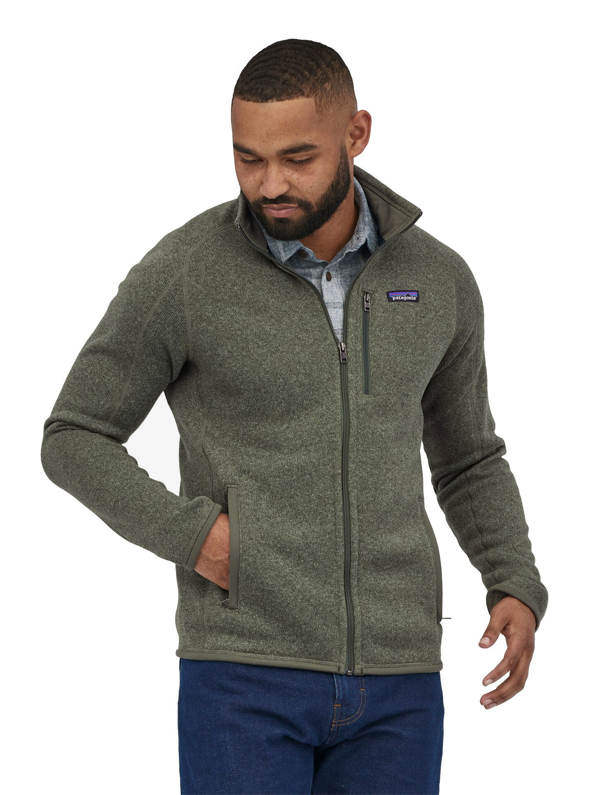

Mens better sweater
Kr. 1899,-
_____________________________
- YKK®-zipper
- Windproof and breathebale
- 2-layer construction
- 100 % sealed seam
- Comfortable interior
- Thigh-length
- Pockets with zippers
- Recycled material
More information
Introducing the EcoTrail™ Recycled Fleece Hiking Jacket: Your Sustainable Adventure Companion Elevate your outdoor experiences while minimizing your environmental footprint with our EcoTrail™ Recycled Fleece Hiking Jacket. Crafted with a commitment to sustainability, this versatile jacket is not only a testament to style but also to responsible outdoor exploration. Key Features: Recycled Materials: Our EcoTrail™ jacket is made from high-quality recycled materials, helping to reduce plastic waste and minimize the impact on our planet. Each jacket is composed of post-consumer plastic bottles, which are transformed into a soft, warm, and durable fleece fabric. Eco-Friendly Insulation: Designed for exceptional warmth without added bulk, the jacket's fleece insulation provides optimal temperature regulation during your hikes. Whether you're trekking through chilly mountain passes or enjoying crisp autumn strolls, you'll stay cozy and comfortable. Versatile Design: The jacket's sleek design ensures it's as suitable for everyday wear as it is for outdoor adventures. Its tailored fit and clean lines make it a stylish choice for urban exploration, while its performance features are perfect for the trail. Moisture Management: Our fleece material is not only warm but also moisture-wicking, ensuring you stay dry even when you're working up a sweat. This feature is essential for those unpredictable weather days or when you need to layer up. Sustainable Manufacturing: Our commitment to sustainability doesn't end with materials; it extends to responsible manufacturing practices. We take pride in our supply chain's minimal environmental impact and ethical labor standards. Multiple Pockets: Keep your essentials within easy reach with the jacket's ample pockets. From your smartphone to trail maps and energy snacks, you'll have everything you need right at your fingertips. Join us in making a difference with sustainable outdoor gear. The EcoTrail™ Recycled Fleece Hiking Jacket is not just a jacket; it's a statement of your commitment to a greener, more responsible world. Whether you're conquering mountain peaks or strolling through local parks, do it in style, comfort, and with the environment in mind. Choose the EcoTrail™ Recycled Fleece Hiking Jacket today and embark on your adventures while leaving a positive impact on the planet. Upgrade your outdoor experience and be part of the movement toward a more sustainable future.